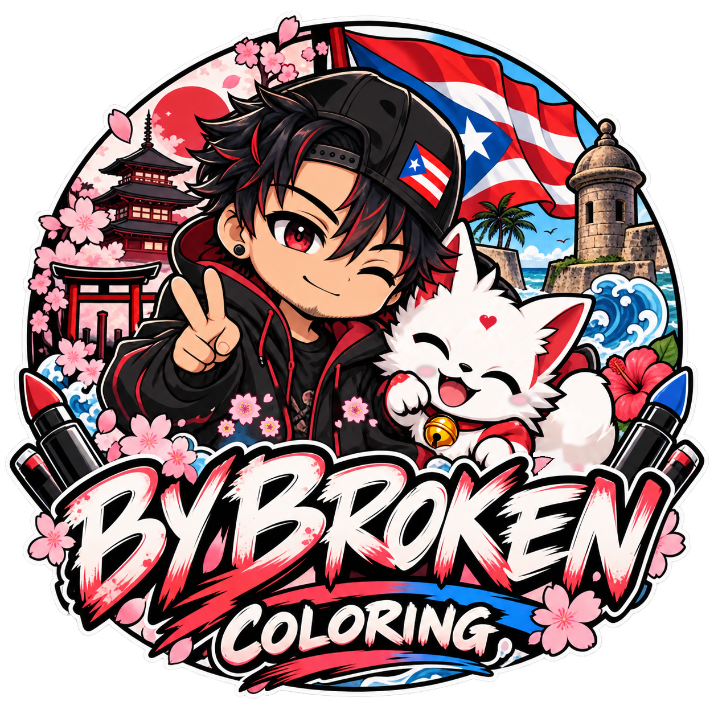
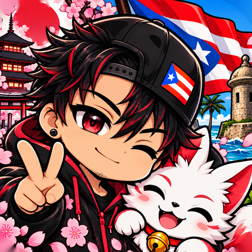
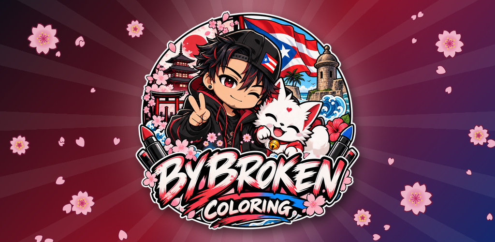

ByBroken Coloring – vista previa (no publicado en Play)
Logo completo (logo-full.png, 1254×1254, transparente)

Icono Play Store (icon-512.png, 512×512)

Tamaños 512 / 96 / 48 px
Feature graphic (feature-1024x500.png)
